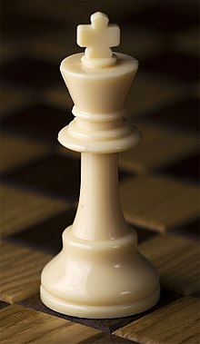
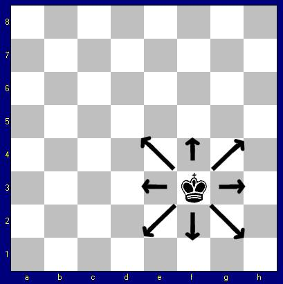

Nel gioco degli scacchi il re è il pezzo più importante e non può in nessun caso essere catturato, inoltre una mossa che lasci il proprio re in presa è illegale. Ogni volta che il re è minacciato di presa, viene detto sotto scacco ed il giocatore che lo difende è obbligato a rimediare a questa situazione nella mossa immediatamente successiva. Se questo è illegale, è scacco matto.

